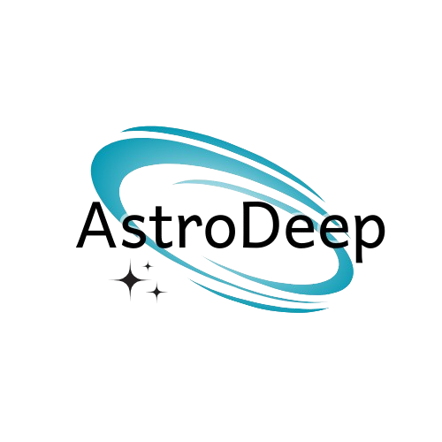
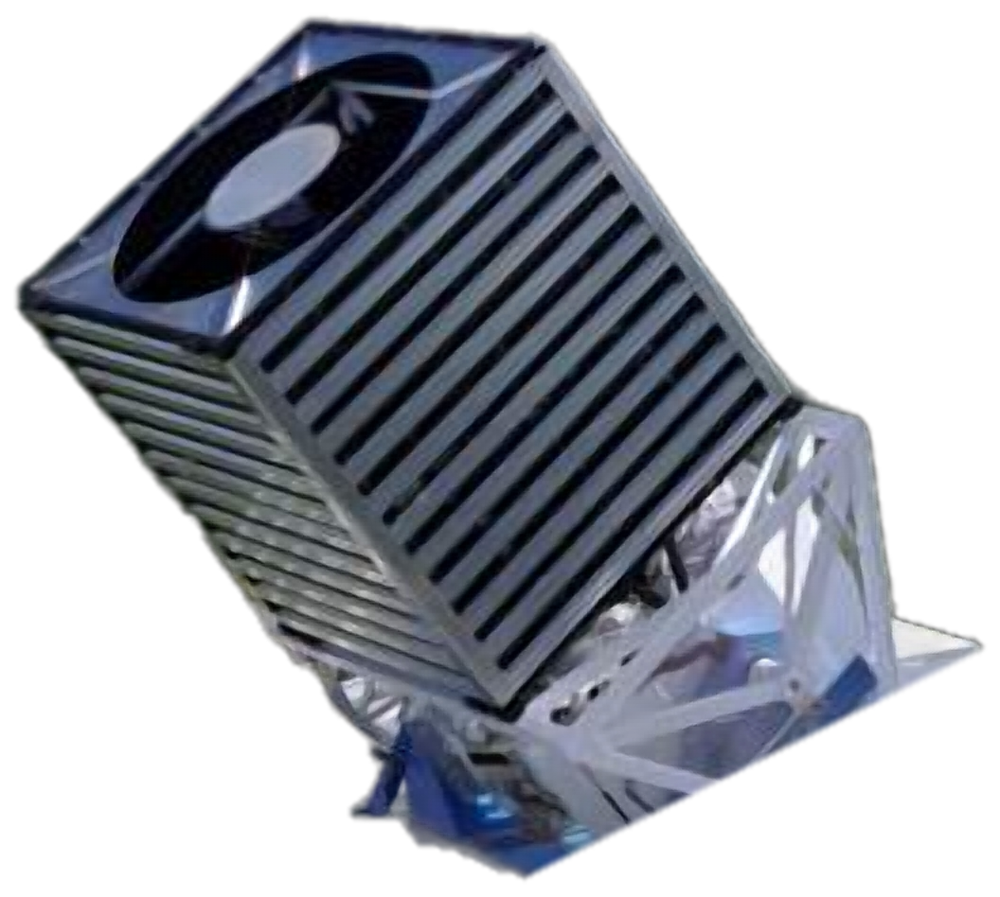
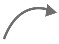
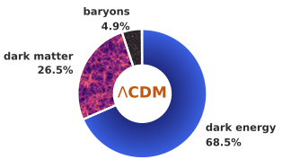
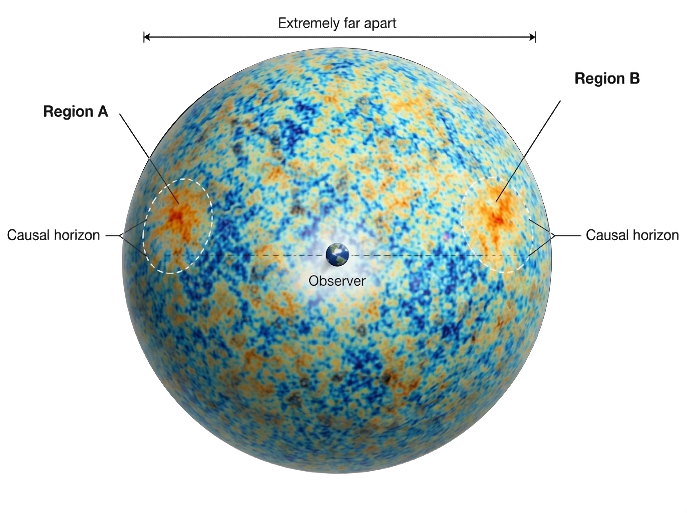
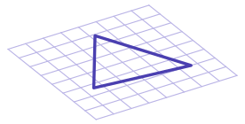
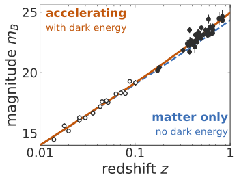

horizon
PhD defense, Université Paris Cité, 12 October 2026
Differentiable Field-Level Cosmology
Cosmic Microwave Background, Weak Lensing, and GPU-Accelerated Inference


Wassim KabalanUniversité Paris Cité, APC/CNRS
supervised by Eric Aubourg and Josquin Errard, co-advised by François Lanusse and Alexandre Boucaud
slides at askabalan.github.io/slides/2026_10_PhD

Stage 2 · SDSS, 2.5 m ground, 1.4″ seeing
Stage 4 · Euclid, 1.2 m space, 0.18″

Abell 2390 · Credit: SDSS DR18 (left); ESA / Euclid / Euclid Consortium / NASA, J.-C. Cuillandre & G. Anselmi (right)
Some of the Stage IV Cosmological Surveys
Space based
Ground based
LiteBIRD
Euclid
14 000 deg²
30 gal arcmin⁻²
From Space
~1.5 billion galaxies
Simons Observatory
Vera C. Rubin Observatory (LSST)

Lambda Cold Dark Matter (\(\Lambda\)CDM)

Lambda Cold Dark Matter (\(\Lambda\)CDM)


The limits of \(\Lambda\)CDM


The early Universe
horizon

Credit: NASA / WMAP Science Team
flatness

+ origin of inhomogeneities
+ magnetic monopole problem
The late Universe
dark energy

Data: Perlmutter et al. (1999)
dark matter
Rubin & Ford (1970), Fig. 9 (M31)
Outline

Kabalan et al. (2026) · submitted to RASTI
Kabalan et al. (2026b) · accepted to JOSS
Kabalan et al. (2026c) · in prep. for JCAP
From model to observation: the CMB

Kabalan et al. (2026) · submitted to RASTI
Kabalan et al. (2026b) · accepted to JOSS
Kabalan et al. (2026c) · in prep. for JCAP
The CMB data-analysis pipeline
From model to observation: weak gravitational lensing

Kabalan et al. (2026) · submitted to RASTI
Kabalan et al. (2026b) · accepted to JOSS
Kabalan et al. (2026c) · in prep. for JCAP

Statistical inference for cosmology

Kabalan et al. (2026) · submitted to RASTI
Kabalan et al. (2026b) · accepted to JOSS
Kabalan et al. (2026c) · in prep. for JCAP
Contribution 1: spatially varying map-based component separation

Kabalan et al. (2026) · submitted to RASTI
Kabalan et al. (2026b) · accepted to JOSS
Kabalan et al. (2026c) · in prep. for JCAP


Parametric component separation: the spectral model
Synchrotron and dust (Galactic foregrounds)
Synchrotron: power law
\[A^{\mathrm{sync}}_\nu({\color{#3b6fb6}\beta_s}) \;\propto\; \left(\frac{\nu}{\nu_0}\right)^{\color{#3b6fb6}\beta_s}\]
Planck: synchrotron
Dust: modified black body
\[A^{\mathrm{dust}}_\nu({\color{#d68910}\beta_d}, {\color{#d68910}T_d}) \;\propto\; \left(\frac{\nu}{\nu_0}\right)^{{\color{#d68910}\beta_d}+1}\frac{e^{h\nu_0/k{\color{#d68910}T_d}}-1}{e^{h\nu/k{\color{#d68910}T_d}}-1}\]
Planck: thermal dust

Rizzieri et al. (2025), arXiv:2510.08534
The spectral likelihood
\[-2\ln\mathcal{L}(\boldsymbol\beta) = -\left(\mathbf{A}^{\top}\mathbf{N}^{-1}\mathbf{d}\right)^{\top}\left(\mathbf{A}^{\top}\mathbf{N}^{-1}\mathbf{A}\right)^{-1}\left(\mathbf{A}^{\top}\mathbf{N}^{-1}\mathbf{d}\right), \qquad \boldsymbol\beta = ({\color{#d68910}\beta_d}, {\color{#d68910}T_d}, {\color{#3b6fb6}\beta_s})\]
How do we represent sky data numerically?
Hierarchical Equal Area iso-latitude Pixellation (of the sphere)
HEALPix

Defining parameter patches on the sphere
Equal-area patches on the sphere
Spherical \(K\)-means

The bias–variance trade-off
Obstacle for full-sky CMB surveys: LiteBIRD
- The number of patches must be tuned to meet the requirements of future surveys
- We want to test many configurations and keep the best one
- This needs a fast optimisation method and a selection criterion for patch configurations
Adaptive moment-based methods

Adam is the standard optimiser of machine learning, built for very many parameters and very noisy gradients
\[\boldsymbol\beta_{t+1} = \boldsymbol\beta_t - \eta\,\frac{\hat m_t}{\sqrt{\hat v_t}+\epsilon}\]
\(m_t\), \(v_t\): running means of \(\mathbf{g}\) and \(\mathbf{g}^2\)
AdaBelief scales the step by the spread of the gradient instead
\[v_t \;\longrightarrow\; s_t:\ \text{running mean of }(\mathbf{g} - m_t)^2\]
A noisy direction gets a smaller step
AdaTopK builds on AdaBelief for physical parameters, with a robust handling of parameter bounds
Selection criteria for optimal patches


Chanial, Biquard, Kabalan et al. (2026), FURAX, arXiv:2603.19600, submitted to JOSS
Kabalan et al. (2026), arXiv:2604.08463, submitted to RASTI
Contribution 2: field-level inference for weak lensing surveys

Kabalan et al. (2026) · submitted to RASTI
Kabalan et al. (2026b) · accepted to JOSS
Kabalan et al. (2026c) · in prep. for JCAP


A weak-lensing forward model, end to end

From a cosmology and an initial density field to convergence and shear on the curved sky
Building a survey-level differentiable forward model
A fast and differentiable gravity solver that can simulate Stage IV survey volumes
The gravity solver: particle mesh

Gravity through FFTs on a mesh: fast, differentiable, and limited by the mesh resolution
Distributing the simulation


- We split the box into pencils, one per GPU
- jaxDecomp implements a differentiable, distributed FFT for the particle-mesh solver
Kabalan et al. (2026b), jaxDecomp: JAX library for 3D domain decomposition and parallel FFTs, accepted to JOSS
Building the observable
Painting on spherical shells

Bilinear interpolation
Four pixels, weighted by the position between their centres: get_interp_weights, implemented in jax-healpy
Radial basis function interpolation
The pixel and its eight neighbours (get_all_neighbours, implemented in jax-healpy), weighted by a Gaussian kernel of adjustable width
Calibrating the lightcone model
- The integrator and step size
- The mesh resolution
- The mass assignment and the spherical painting
- The number and spacing of the density shells
- The interpolation of the particles onto the lightcone
- The gradient (adjoint) of the particle-mesh ODE
- The performance of the forward model and its gradient
Building the observable
Using the forward model for field-level inference
Conclusion and perspectives

Kabalan et al. (2026) · submitted to RASTI
Kabalan et al. (2026b) · accepted to JOSS
Kabalan et al. (2026c) · in prep. for JCAP
The software behind this thesis


Reproducible software for research
Where it is used
Scientific goal: applications to CMB × LSS with CMB lensing
Conclusion

Removing computational bottlenecks for Stage IV surveys
Early Universe · inflation
Spatial variability for the CMB
Late Universe · dark energy
Explicit field-level inference for large-scale structure
Thank you
Distributed transpositions

Higher-order statistics: the starlet \(\ell_1\) norm

Ajani et al. (2021), arXiv:2101.01542; Tersenov et al. (2026), in prep.